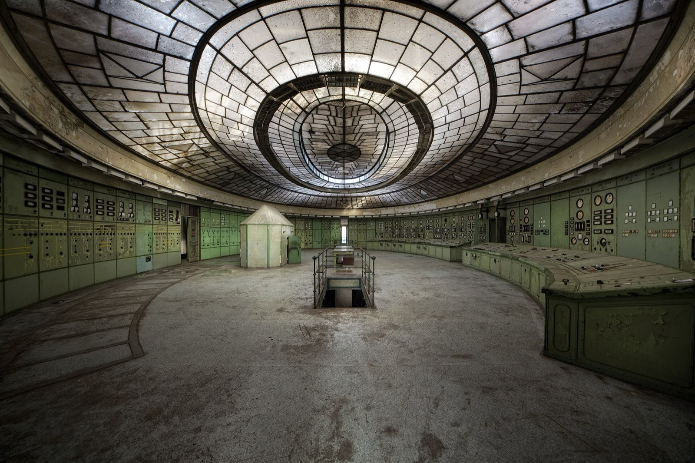

PLC 255 · LESSON 08 OF 11 · YEAR 2 · SEMESTER 2
Troubleshooting with a live PLC
Online monitoring, forcing with fear, and cross-referencing. A systematic fault-finding method from symptom to rung to field device. The lesson maintenance hiring managers actually test.
Lecture
- Why is forcing an output dangerous, and what discipline governs it?
- From symptom to rung to field device: sketch the fault-finding path.
Structured-notes tier: the scope below defines the lesson; full teaching depth is queued behind the Core 60.
Foundations
This lesson belongs to PLC 255 · PLC Fundamentals I (Year 2 · Semester 2). It stands on the course's primary texts:
- NPTEL: Industrial Automation and Control alternative (enable captions) (nptel.ac.in)
Course context: The plant's reflexes: PLC hardware, scan cycle, ladder logic, timers and counters, and disciplined I/O wiring — taught to read-and-troubleshoot level first, author level second.
Worked Examples
Worked solutions for this lesson are queued. Until they land, use the lesson's own checkpoint questions as practice prompts — attempt them from the cited source before reading on:
- Why is forcing an output dangerous, and what discipline governs it?
- From symptom to rung to field device: sketch the fault-finding path.
Kuwait Floor
No Kuwait anchor assigned to this lesson yet. The six anchor companies and their processes are mapped on the career page.
Library
Taught from — NPTEL: Industrial Automation and Control alternative (enable captions); supplementary video: RealPars In Arabic — alternative